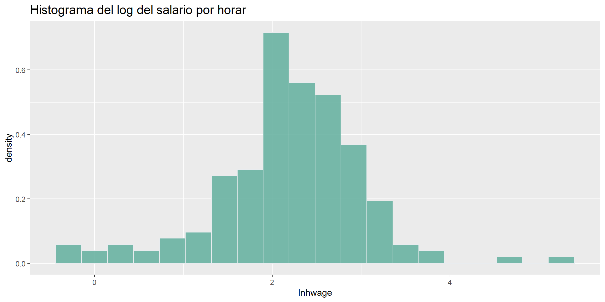

Hemos trabajado hasta ahora modelando las distribuciones de variables aleatorias o la media condicional
Muchos problemas nos dan cierta estructura (restricciones de homogeneidad, por ejemplo) que nos hacen asumir ciertos modelos
En otras ocasiones, podemos analizar los datos sin imponer supuestos distribucionales
Los métodos no paramétricos son buenos aliados para la representación de relaciones
Frecuentemente complementamos análisis paramétricos con sus contrapartes no paramétricas
Estimación de densidades
Histograma
Consideremos una variable aleatoria continua \(x\)
Un histograma es un estimador de la densidad formado al partir el rango de \(x\) en intervalos iguales y calculando la fracción de dados en cada intervalo
Queremos estimar la densidad \(f(x_0)\), es decir, la densidad de \(x\) en \(x_0\)
Usemos datos sobre salarios de 175 mujeres usados en CT: salarios.csv
Usamos 20 ventanas
Ejemplo: histograma
data.salarios<-read_csv("salarios.csv",locale =locale(encoding ="latin1"))data.salarios %>%ggplot(aes(x=lnhwage)) +geom_histogram(aes(y=..density..),bins=20,fill="#69b3a2",color="#e9ecef",alpha=0.9) +ggtitle("Histograma del log del salario por horar") +theme(plot.title =element_text(size=15))

Densidad Kernel
El estimador de densidad Kernel (Rosenblatt, 1956) es la generalización del histograma
Definimos la densidad estimada Kernel como
\[\hat{k}(x_0)=\frac{1}{Nh}\sum_i \mathit{K}\left(\frac{x_i-x_0}{h}\right)\] - \(\mathit{K}\) es una función de pesos Kernel
\(h\) es el ancho de banda o parámetro de suavizaición
La función Kernel evalúa más datos alrededor de \(x_0\) que el histograma (posiblemente todos los datos)
Función Kernel
La función \(\mathit{K}\) cumple con
\(\mathit{K}(z)\) es simétrica alrededor de 0 y es continua
\(\int\mathit{K}(z)dz=1\), \(\int z\mathit{K}(z)dz=0\) y \(\int|\mathit{K}(z)|dz<\infty\)
Ya sea
\(K(z)=0\) si \(|z|\geq z_0\) para algún \(z_0\), o
\(|z|K(z)\to 0\) si \(|z|\to\infty\)
\(\int z^2 \mathit{K}(z)dz=\kappa\), donde \(\kappa\) es una constante
Una función que satisface estas condiciones puede ser una función Kernel para pesar las observaciones y estimar la densidad en \(x_0\)
Al proveer \(\mathit{K}\) y \(h\), es relativamente fácil obtener el estimador de la densidad
Funciones Kernel comúnmente usadas
Kernel
\(\mathit{K}\)
Uniforme, box o rectangular
\(\frac{1}{2} \mathbf{1}(abs(z)<1)\)
Triangular
\((1-abs(z))\mathbf{1}(abs(z)<1)\)
Epanechnikov o cuadrático
\(\frac{3}{4}(1-z^2)\mathbf{1}(abs(z)<1)\)
Normal o gausiano
\(\frac{1}{\sqrt{2\pi}}exp(-z^2/2)\)
Elección del ancho de banda
Un ancho de banda pequeño reduce el sesgo (usamos observaciones muy parecidas, aunque pocas)
Un ancho de banda grande mejora la suavización
El ancho de banda es una decisión más importante que la elección del tipo de Kernel
Consideremos el error cuadrático medio como una medida de desempeño
Una medida global de qué tan buena es la aproximación es el error cuadrado promedio integrado
\[MISE(h)=\int MSE(\hat{f}(x_0))dx_0\]
Elección del ancho de banda
Silverman (1986) muestra que
\[h^*=\delta \left(\int f'' (x_0)^2dx_0\right)^{-0.2}N^{-0.2}\] donde \(\delta=\left(\frac{\int \mathit{K}(z)^2dz}{(\int z^2\mathit{K}(z)dz})^2\right)\)
Noten que \(h^*\) depende de la curvatura de la densidad
Si \(f(x)\) es muy variable, \(h\) será pequeña
Estimador de Silverman
Usamos \(\delta\) estimador por Silverman, dependiendo del Kernel elegido
Kernel
\(\mathit{K}\)
\(\delta\)
Uniforme, box o rectangular
\(\frac{1}{2}\mathbf{1}(abs(z)<1)\)
1.3510
Triangular
\((1-abs(z))\mathbf{1}(abs(z)<1)\)
-
Epanechnikov o cuadrático
\(\frac{3}{4}(1-z^2)\mathbf{1}(abs(z)<1)\)
1.7188
Normal o gausiano
\(\frac{1}{\sqrt{2\pi}}exp(-z^2/2)\)
0.7764
El estimador plug-in de Silverman funciona casi siempre
\[h^*_{Silverman}=1.3643\delta\left(\min \left\{s,\frac{iqr}{1.349}\right\}\right)N^{-0.2}\] donde \(s\) es la desviación estándar de los datos, \(iqr\) es el rango intercuartil y \(\frac{iqr}{1.349}\) protege en presencia de observaciones atípicas
Ejemplo: densidad Kernel estimada
Estimamos un Kernel epanechnikov con el ancho de banda óptimo
Primero calculemos el ancho de banda óptimo
Usamos \(\delta\) calculado por Silverman
delta <-1.7188# Ver CTw.sd <-sd(data.salarios$lnhwage)w.iqr.adj <-IQR(data.salarios$lnhwage)/1.349w.N <-nrow(data.salarios)constante <-1.3643ajuste <-min(w.sd,w.iqr.adj)h <- constante*delta*ajuste*w.N^(-0.2) # ancho de bandah
[1] 0.5453854
Ejemplo: densidad Kernel estimada
El parámetro bw en geom_density especifica la mitad del ancho de ventana
Debemos de especificar la mitad de \(h\) que acabamos de calcular
Consideremos el siguiente modelo con un regresor escalar
\[y_i=m(x_i)+\varepsilon_i\]
Tenemos \(N\) observaciones y \(\varepsilon_i\sim iid(0,\sigma^2_{\varepsilon})\)
Queremos usar las \(x\) para decir algo sobre \(y\) pero no queremos darle un modelo paramétrico
Promedios locales ponderados
Supongamos que para un valor de \(x\), digamos \(x_0\), observamos \(N_0\) valores de \(y\)
Una forma de estimar \(m(x_0)\) es con la media muestral \(\tilde{m}(x_0)\)
El problema es que este estimador puede ser muy ruidoso con regresores discretos y muestras pequeñas
Una alternativa es mirar en una vecindad de \(x_0\)
Definimos un estimador de medias ponderadas local
\[\hat{m}(x_0)=\sum_{i=1}^Nw_{i0,h}y_i\]
Los pesos \(w_{i0,h}\), con \(\sum_i w_{i0,h}=1\) indican cuánto pesan las observaciones alrededor de \(x_0\), dándole más peso a las más cercanas
\(h\) es el ancho de ventana
Promedios locales ponderados
Si decidimos que cada observación en la vecindad dada por \(h\) pese lo mismo, el estimador local es
\[\hat{m}(x_0)=\frac{\sum_i\mathbf{1}\left(\Bigg|\frac{x_i-x_0}{h}\Bigg|<1\right)y_i}{\sum_i\mathbf{1}\left(\Bigg|\frac{x_i-x_0}{h}\Bigg|<1\right)}\] - El numerador es la suma de \(y_i\) para las observaciones dentro del ancho de banda
El denominador es el número de unidades sobre las que se está sumando
Promedios locales ponderados
De hecho, las predicciones de MCO también pueden expresarse como un estimador de medias ponderadas